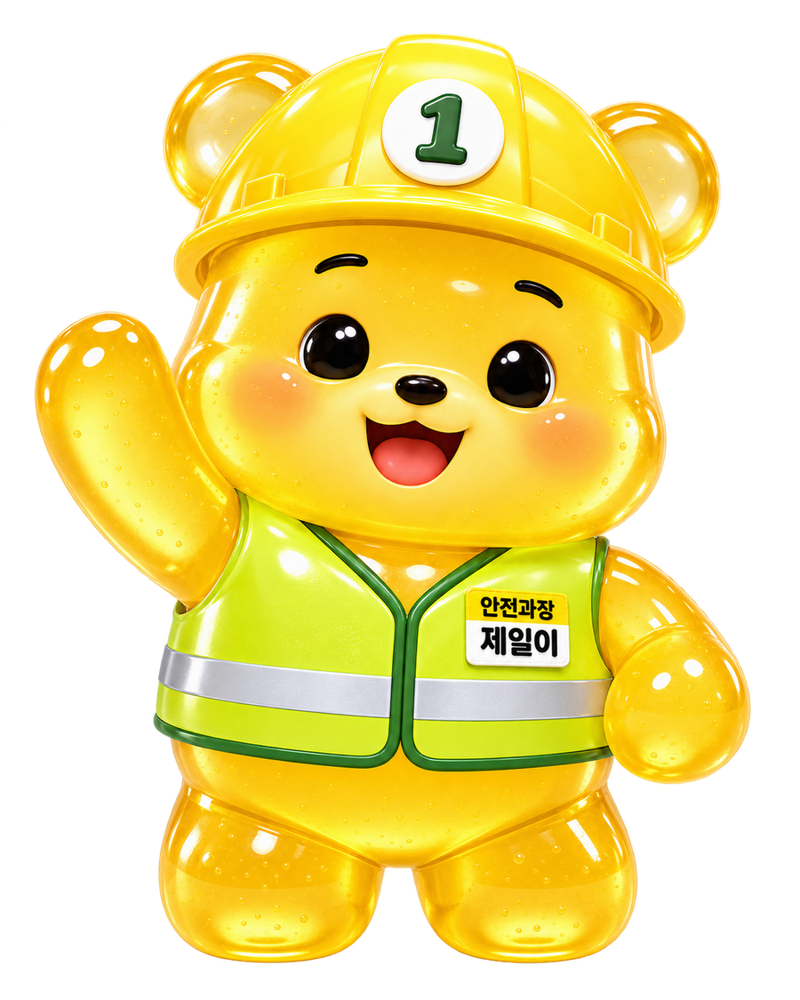

CAREER
취준생
자격증부터 면접까지, 합격을 위한 준비를 한 흐름으로.
취업준비생에게는 자격증 → 영어 → 자기소개서 → 면접의 준비 순서를,
재직자에게는 현장 작업 → 교육 → 위험성평가 → 보건관리의 실무 도구를 제공합니다.

자격증부터 면접까지, 합격을 위한 준비를 한 흐름으로.
현장에서 바로 쓰는 안전관리 기록·계산·관리 도구.
자격증 → 영어 → 자기소개서 → 면접 순서로 준비하도록 원래 구성의 핵심 흐름을 복원했습니다.
산업안전기사 중심 CBT, 오답 재도전, 북마크와 과목별 반복학습으로 기본 직무지식을 만듭니다.
02→토익스피킹 PART 1~5 템플릿과 실전 표현을 단계별로 정리해 취업 요건을 준비합니다.
03→내 경험을 안전 직무 언어로 바꾸고 STAR 구조, 항목별 평가기준, AI 초안·검토 기능으로 다듬습니다.
04→기본질문, 빈출질문, 기업별 기술질문과 답변 노트를 활용해 말로 설명하는 연습까지 이어갑니다.
학습 기록과 북마크는 현재 브라우저에 저장됩니다.
지원 회사와 직무, 자신의 경험을 바탕으로 초안을 만들고 STAR 구조와 직무 연결성을 점검합니다.
기본기·빈출질문·직무 기술질문·압박 대응을 정리하고 기업별 예상질문까지 이어서 준비합니다.
예상 질문마다 자신의 답변을 작성하고 현재 브라우저에 저장해 반복해서 수정할 수 있습니다.
자격증 문제에서 외운 용어가 면접에서 그대로 끝나는 것은 아닙니다. 예를 들어 위험성평가를 공부했다면 정의만 말하기보다 유해·위험요인 파악 → 위험성 결정 → 감소대책 수립 → 실행·검증의 흐름을 자신의 경험과 연결해 설명해야 합니다. 그래서 안전과장은 시험자료와 실무자료를 분리하지 않고 서로 이어지게 구성합니다.
재직자 영역은 서류를 예쁘게 만드는 것보다 위험요인을 발견하고, 법정 기준을 확인하고, 필요한 조치를 기록하며, 개선이 완료됐는지 확인하는 업무 흐름에 초점을 맞춥니다. 아래 도구들은 실제 사업장 기준과 회사 절차에 맞게 검토해 사용하는 보조도구입니다.
엑셀 붙여넣기, 작업·인원·고위험요인 파싱, 무재해 현황과 작업별 안전조치를 한 화면에서 관리합니다.
채용시·특별·MSDS·밀폐공간 교육의 대상과 시간을 기록하고 이수 여부를 확인합니다.
계획 → 실시 → 개선조치·검증 → 결과공유의 흐름으로 평가 기록을 관리합니다.
평가 방법, 위험도 판단, 감소대책 우선순위와 기록 시 유의점을 실무 관점으로 정리했습니다.
산업안전보건 관계 법령과 실무 키워드를 빠르게 찾아 업무 판단의 출발점을 확인합니다.
화학물질 등록·규제정보 확인·경고표지·작업환경측정·특수건강진단을 연결해 관리합니다.
체적·환기량·환기팬 가동시간·체감온도·유해가스 기준을 계산하고 현장 조치를 확인합니다.
발생정보, 즉시조치, 4M 원인, 재발방지대책과 위험성평가 연계를 구조화해 기록합니다.
산업안전·안전보건·중대재해·산업재해 관련 최신 기사를 모아 보여줍니다. 기사 제목을 누르면 원문 언론사로 이동합니다.
Google 뉴스 RSS를 기본으로 수집하고, Kakao 검색 API가 설정된 경우 함께 취합합니다.